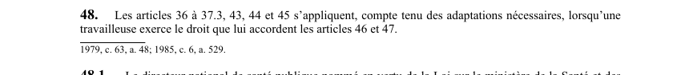

art-48-LSST : dispositions applicables à l'allaitement
Un article du wiki ⚖️ Recueil législatif
🌐 LegisQuébec · 📄 PDF officiel (page 15)
Texte officiel : capture du PDF

🔗 Ouvrir a cette page : LSST.pdf : page 15 · texte a jour au 26 mars 2024
En bref
Les articles 36 à 37.3, 43, 44 et 45 s'appliquent, compte tenu des adaptations nécessaires. Il s'agit d'une obligation.
Voir aussi
- art. 46 : affectation préventive pour travailleuse allaitante · faculté : une travailleuse qui fournit à l'employeur le certificat attestant que les conditions de son travail comportent des dangers pour l'enfant qu'elle allaite peut demander d'être affectée à des tâches ne comportant pas de tels dangers.
- art. 47 : cessation travail travailleuse allaitante · faculté : si l'affectation demandée n'est pas effectuée immédiatement, la travailleuse peut cesser de travailler jusqu'à ce que l'affectation soit faite ou jusqu'à la fin de la période de l'allaitement.
- art. 48.1 : protocoles d'identification des dangers · définition : le directeur national de santé publique élabore et met à jour les protocoles visant l'identification des dangers aux fins de l'exercice des droits prévus aux articles 40, 41, 46 et 47 ; la Commission.
- art. 48.2 : publication protocoles par Commission · les protocoles élaborés par le directeur national de santé publique sont transmis à la Commission qui les publie sur son site Internet.
- ↑ Loi : LSST
Pages qui pointent ici (7)
- art-137-LMRSST, insertion LSST après art. 48 Recueil législatif
- art-46-LSST, EPI obligatoires Recueil législatif
- art-47-LSST, affectation demandée n pas Recueil législatif
- art-48.1-LSST, directeur national santé publique Recueil législatif
- art-48.2-LSST, publication protocoles par Commission Recueil législatif
- LSST - Chapitre II - Droits et obligations Recueil législatif
- Retrait préventif Recueil législatif